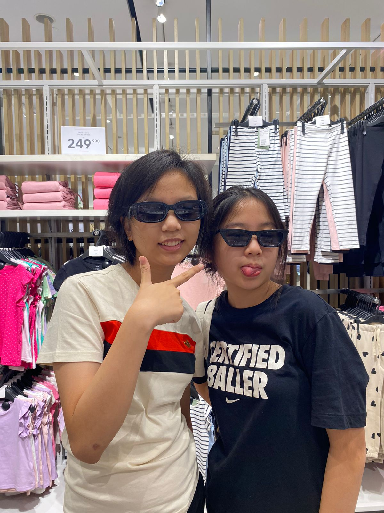
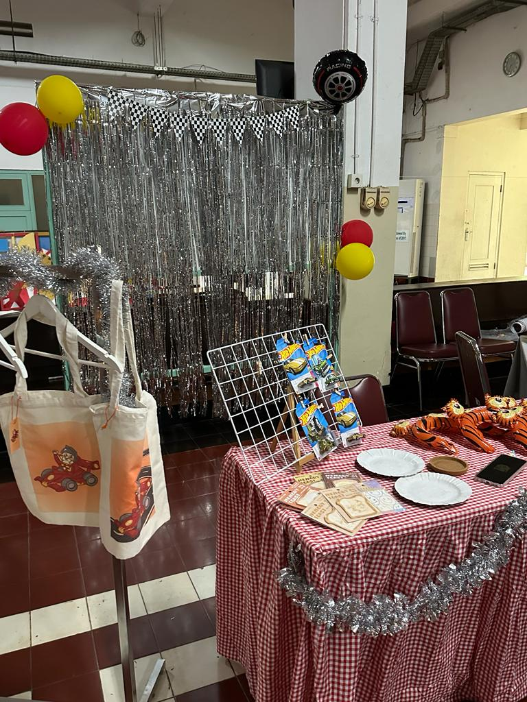
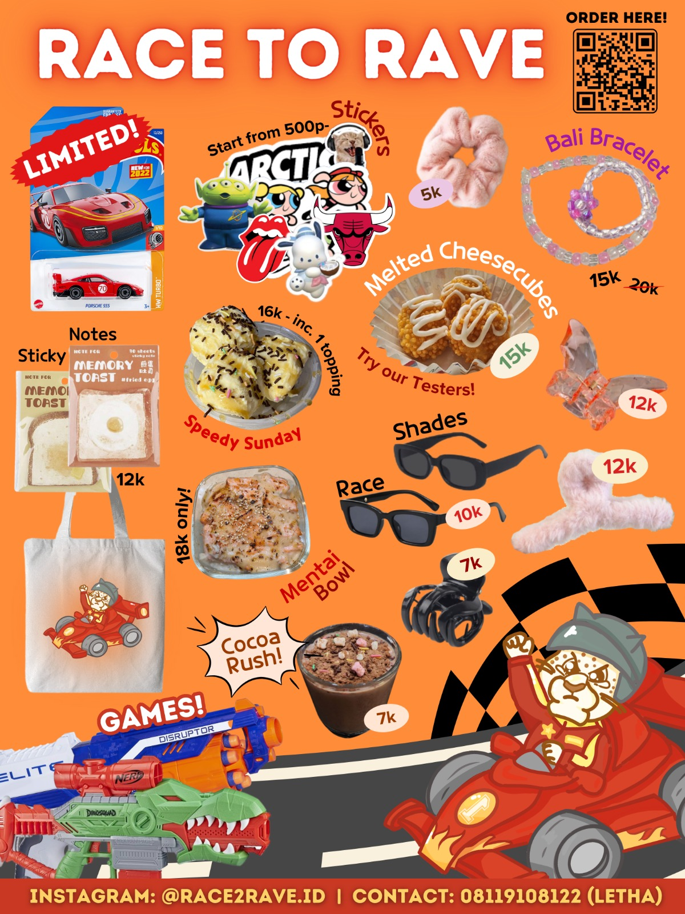
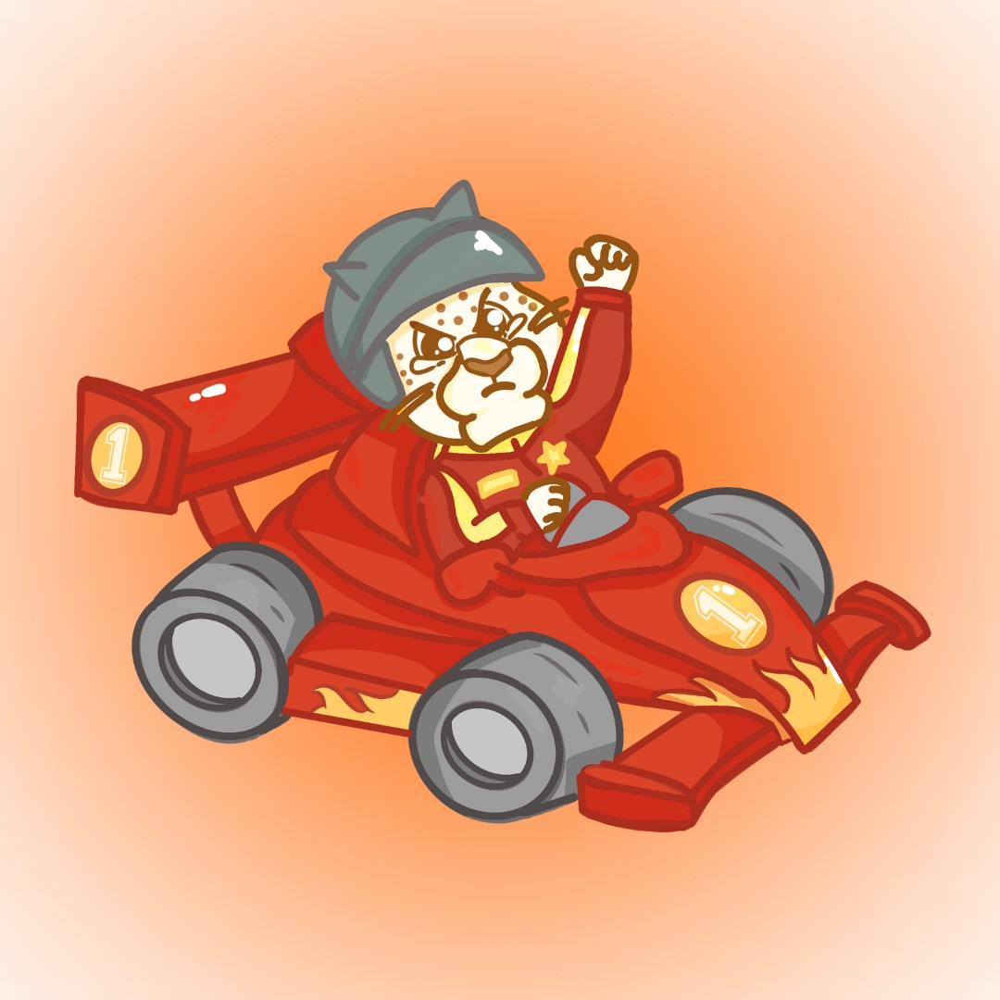
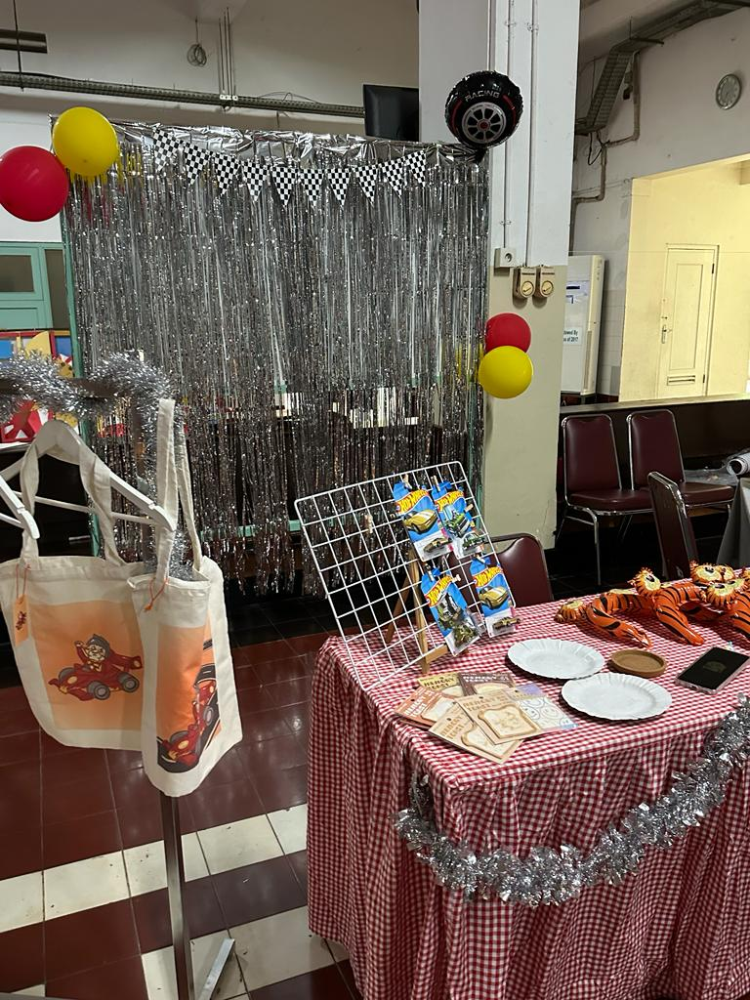
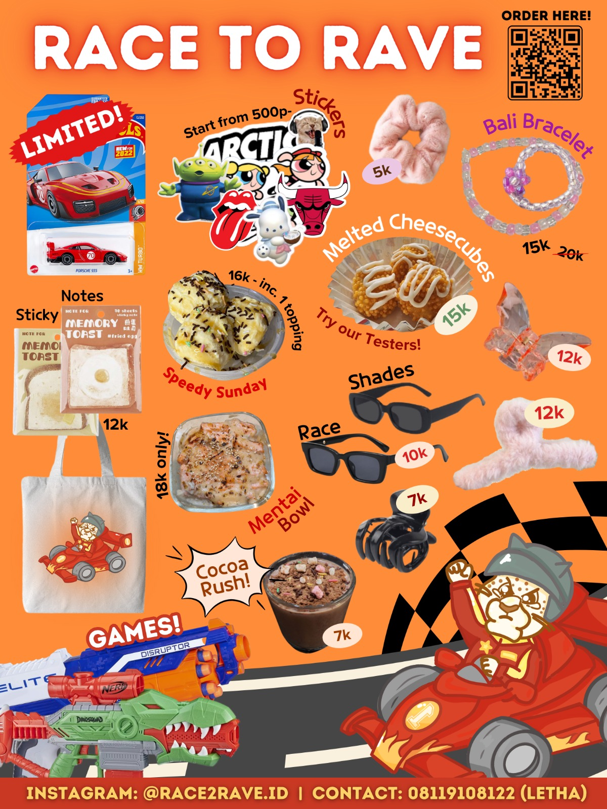
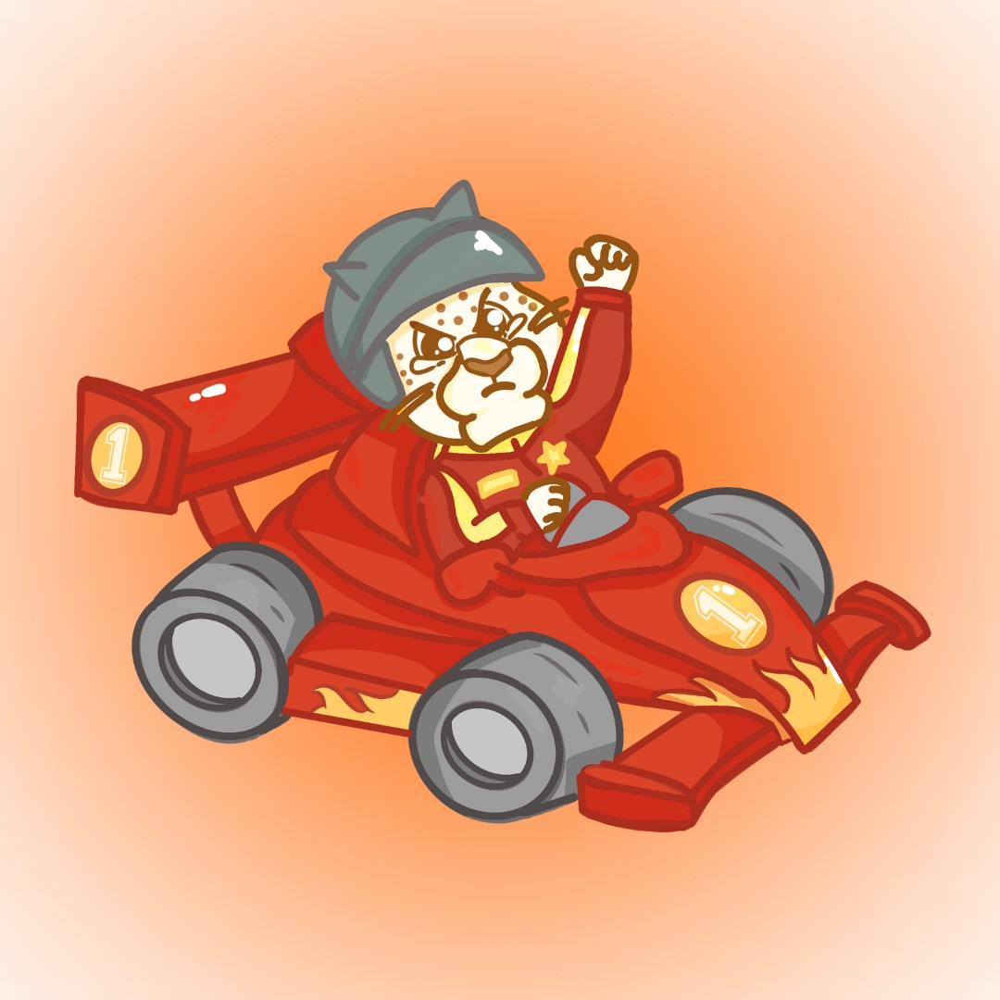
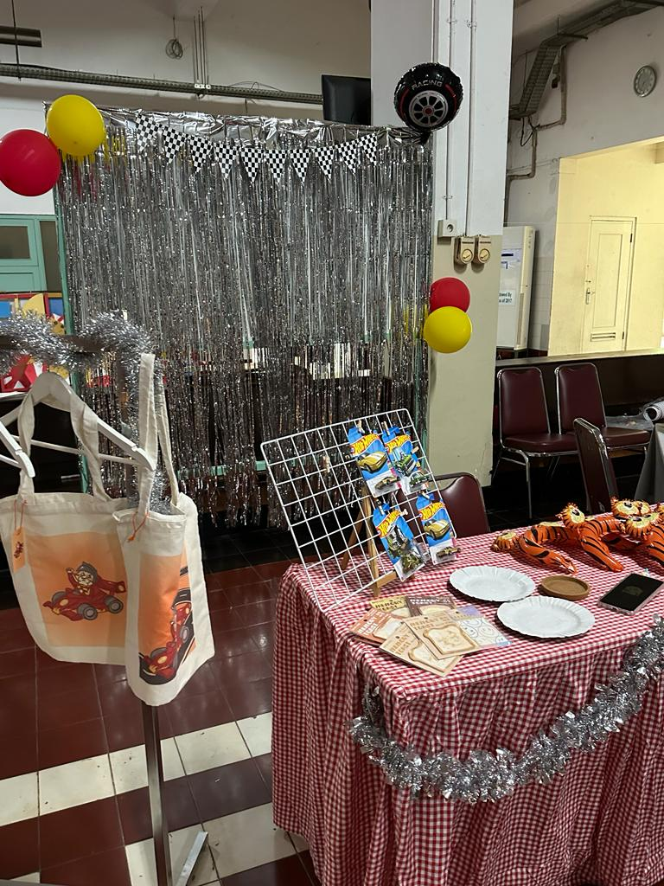
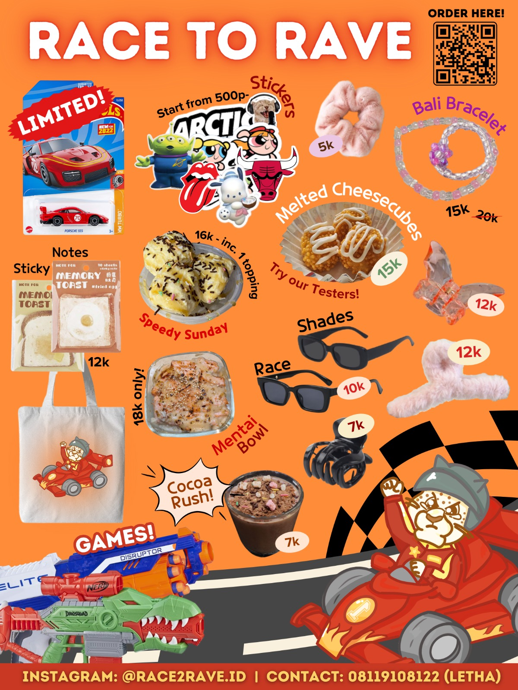
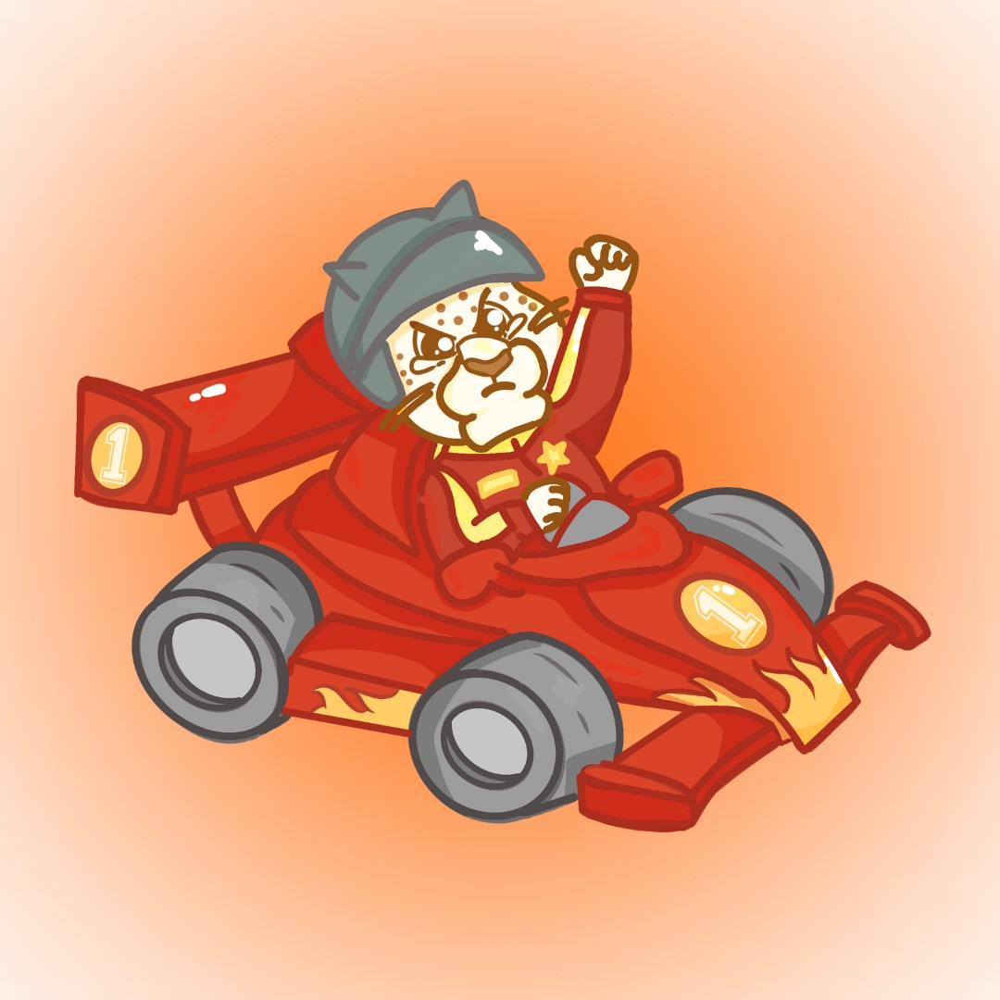

PENUTUP
1. Kesimpulan
- Pembuatan keju mozarella Melalui tahap-tahap sebagai berikut: pasteurisasi, pengentalan, pengolahan dadih, persiapan sebelum pematangan, meliputi penekanan dan pengasinan.
- Pembuatan keju mozarella dibutuhkan bakteri dan citric acid. Digunakan untuk memisahkan gumpalan susu dan air.
- Pembuatannya sederhana karena tidak memerlukan banyak bahan yang bersifat kimia tetapi rasa dan teksturnya sama dengan pabrikan. Membuat keju sendiri yang higienis.
- Membuat makanan dari bahan dasar perikanan meningkatkan kreativitas para siswi.
- Bazar ini menarik perhatian para siswi, karena mereka ingin mencoba makanan baru atau membeli barang yang dibutuhkan.
- Perlu perencanaan yang tepat, sehingga barang dagangan dapat terjual semua.
- Kunci penting dari kegiatan bazar adalah kerjasama dan kolaborasi antara anggota kelompok, para siswi dan guru.
- Kegiatan bazar harus mendapat dukungan dari semua komunitas sekolah.
2. Saran
Kegiatan bazar merupakan langkah positif dalam meningkatkan kewirausahaan di kalangan para siswi, maka bazar perlu diadakan setiap tahun agar setiap angkatan mempunyai pengalaman berdagang, mengelola modal, berinteraksi dengan konsumen, meningkatkan kreativitas dan kerjasama dengan teman sekelompok. Selain siswa dapat berkolaborasi, kegiatan bazar memberikan dampak positif bagi seluruh siswi dan sekolah. Kegiatan bazar memberikan pengalaman praktis dalam menjalankan usaha, hal ini penting untuk masa depan para siswi. Mungkin kedepannya waktu kegiatan bazar dapat diperpanjang dalam jumlah hari maupun jamnya supaya para siswi dapat lebih meningkatkan kreativitas dan kerjasamanya.
3. Daftar Pustaka
- Alkitab. Kitab Kejadian dan Roma. Diakses pada tanggal 7 Maret 2024 pukul 17.00 WIB.
- Buku Agama. Diakses pada tanggal 7 Maret 2024 pukul 16.55 WIB.
- Gereja dan Lingkungan Hidup. Diakses pada tanggal 30 November 2023 pukul 17:46 WIB melalui https://misi.sabda.org/gereja_lingkungan_hidup.
- Azizah, Nora. (September 25, 2023). Hari Ini, Kualitas Udara Jakarta Terburuk Keenam di Dunia. Diakses pada 30 Oktober 2023 pukul 16:45 WIB melalui https://news.republika.co.id/berita/s1j0om463/hari-ini-kualitas-udara-jakarta-teruruk-keenam-di-dunia.
- Diakses pada 30 Oktober pukul 19:32 https://www.liputan6.com/bisnis/read/5501808/akibat-penurunan-muka-tanah-jakarta-bisa-rugi-rp-10-triliun?page=2.
Spotify Playlist!
Gallery

 







